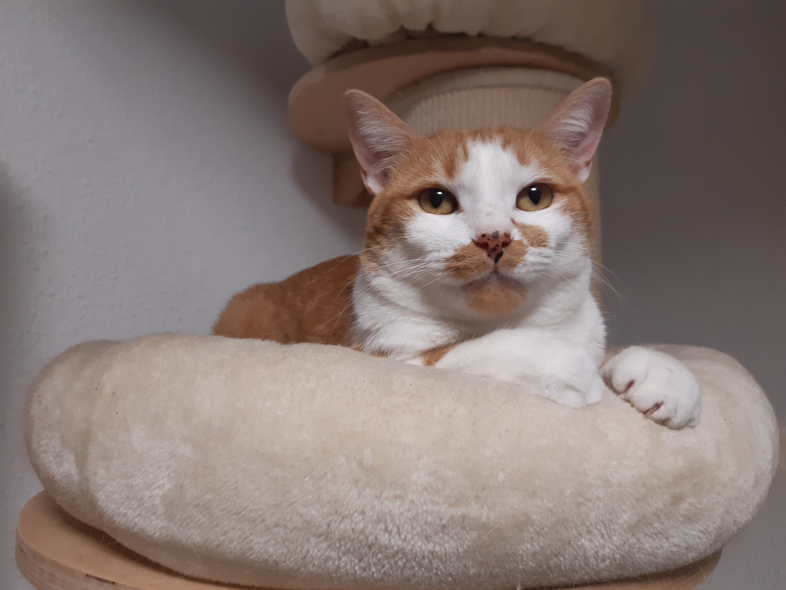

"Los gatos tienen una absoluta honestidad emocional; los seres humanos, por una razón u otra, pueden ocultar sus sentimientos, pero el gato no".
– Ernest Hemingway."Me habían dicho que el procedimiento de entrenamiento con gatos era difícil. No es así, el mío me entrenó en dos días."
– Bill Dana.
Mis gatos: Sonqo y Patxi
Cómo llegaron a mi vida
El primero fue Sonqo. Y supongo que por eso le tengo un afecto especial. Llegó en un momento de mi vida en que todavía lidiaba con recuperarme de todo lo que podía haber ido mal, y había ido peor. Unas amigas me recomendaron tener un gato como mascota para distraerme. Ellas tenían. Pero yo siempre me había considerado anti-gatos y dog lover total. Hacía años que no tenía mascotas. Decidí dar una oportunidad a un gato y me puse a buscar gatos en adopción. Entre varias opciones, y luego de conseguir convencer a mi marido, encontré uno que al ver su foto me enamoró. Contacté con la persona del anuncio. Y al cabo de unas semanas fuimos a por él. Era tan pequeñito. Así empezó mi aventura con mi nuevo compañero felino.
Como unos 11 meses después llegó Patxi. No tenía ninguna intención de tener otro gato, debido al gasto y la responsabilidad de tener una mascota (para toda la vida). Pero Sonqo había crecido, y al no tener contacto con otro ser de su misma especie, se estaba acostumbrando a mordernos, y ya era preocupante, por más que hacíamos todo lo posible para redireccionar ese comportamiento. Así que decidí contactar con las protectoras cercanas. Una de ellas respondió, me comentó que tenía un gato que llevaba apenas unos días que lo habían rescatado del abandono en la calle y que parecía tener menos de un año de edad (el veterinario confirmó que tenía más). Fue ir a verlo, tenía mucho miedo, pero al mismo tiempo era muy cariñoso, y decidimos que viniera a casa. Acordamos con la protectora que sería una acogida con opción de adopción. Finalmente, se quedó y vino a completar la familia. Sonqo mejoró su comportamiento y Patxi dejó de lado su miedo.
Y así fue cómo ellos llegaron a mi vida para hacerla mejor, cambiar completamente mi manera de pensar y convertirme en cat lover forever and ever (no, no he dejado de amar a los perros).
He llegado a la conclusión que el que odia a los gatos es porque no se ha tomado el tiempo de conocerlos.
¿Qué encontrarás por aquí?
Pues mira, este es el contenido:
Sonqo

Descripción
Sonqo tiene unos 2 años y medio. Es un gato paseante, travieso y un excelente cazador de insectos.
Raza
Común europeo de pelo semilargo, con una capa de siamés.
Origen del nombre
Sonqo significa corazón en quechua.
Personalidad
Tiene un carácter especial. Muy curioso, le encanta probar casi todo lo nuevo. Se excita muy rápido. Tienes que saber tratarlo para que muestre su mejor faceta. Bastante independiente. Es muy cariñoso cuando quiere, sobre todo cuando quiere comer. Y un maravilloso enfermero. Le encanta jugar y que juegues con él. Pega unos brincos enormes para intentar coger aquello que le interesa. También es un poco celoso de su hermano Patxi.
Enfermedades
Granuloma eosinofílico.
Patxi

Descripción
Patxi tiene entre 4 a 5 años de edad. Casero. Es una máquina del ronroneo, un parlanchín y amante de las alturas.
Raza
Común europeo de pelo corto, de colores blanco y anaranjado.
Origen del nombre
La protectora le había llamado Pachín, pero no me gustaba. Y como todavía no se acostumbraba a su nuevo nombre. Al llamarle Pachi, cambiamos a Patxi para que fuera más español.
Personalidad
Curioso, aunque algo tímido. Extremedamente cariñoso y muy demandante de cariño. No juega tanto como su hermano Sonqo, pero se dan una buenas peleas. Es dominante, y un pelín envidioso de su hermano Sonqo, pero un gran maestro. Muy quejón. Le encanta comer. También es un estupendo enfermero. Y de ninguna manera quiere volver a pisar la calle. Su lema es en casa estoy bien y de aquí no me muevo.
Enfermedades
Insuficiencia pancreática exocrina.
Resumen en tabla
| Característica | Los gatos más bellos | |
|---|---|---|
| Sonqo | Patxi | |
| Edad | 2,5 años | 4-5 años |
| Raza | Común europeo de pelo semilargo | Común europeo de pelo corto |
| Colores | Atigrado beige | Blanco y anaranjado |
| Paseante | Sí | No |
| Le encanta | Cazar insectos, jugar con el agua que cae del grifo | Trepar a lo más alto |
| Zonas que le encanta que le toquen | Cabeza y cuello | Todo el cuerpo |
| No le gusta | Que le toquen mucho | Que le carguen |
| Enfermedades que padecen | Granuloma eosinofílico | Insuficiencia pancreática exocrina |
Recomendaciones
Salir a pasear de manera segura con tu gato
Sí. Lo has leído bien. Los gatos también pueden pasear. Existe la errónea creencia que los gatos sólo deben estar en casa. No es así. No sólo los perros tienen derecho a salir. Pero un gato no es un perro. Eso tenlo muy presente. Pasear un gato no es una moda. Y la idea de sacarlo es que podrá experimentar otras cosas que no puede estando dentro de casa, de manera segura. Aquí te dejo algunas recomendaciones (lo que aprendí con Sonqo) para alcanzar el objetivo:
- Conocer la personalidad de tu gato. ¿Crees que le gustarán los nuevos olores, ruidos, y cosas que vea fuera? Sí es así, entonces es un buen candidato. De lo contrario, NO lo fuerces.
- Vacunas y desparasitaciones al día.
- Informarse adecuadamente. Te recomiendo que leas las experiencias de varias personas, los peligros a los que se expone al salir y sobre todo las consecuencias de no hacerlo bien.
- ¿Sigues creyendo que a tu gato le gustará y que estás dispuesto a involucrarte en el proceso? Genial! Vais por buen camino.
- Adquirir el equipamiento imprescindible:
- Arnés adecuado para el cuerpo de tu gato. No te decantes por los muy monos, que muchos de ellos no guardan la seguridad debida, y los gatos son escapistas natos. Asegúrate que ante un tirón el gato no podrá soltarse del arnés.
- Correa corta. Posteriormente podrás cambiarla por una más larga.
- Mochila transportadora adecuada al tamaño y peso de tu gato. Tu gato debe sentirse cómodo y tranquilo en él. Será su refugio cuando se canse.
- Contenedores para agua, comida y chuches.
- Paciencia. Mucha paciencia. (Esto no lo puedes comprar!)
- Practicar en casa. Hay que ir acostumbrándolo al arnés, a la correa y a la mochila. Se te hará más fácil cuanto más joven sea el gato. Lo que no quiere decir que un gato mayor no lo pueda hacer. Practica, practica y practica. Esa es la clave. Y usa el refuerzo positivo. ¿Que no sabes qué es eso? Usa las chuches que más le guste, dile cosas bonitas en un tono neutro y bajo, y NO lo fuerces.
- Sacarlo por periodos muy cortos. ¿Ya se mueve con soltura en casa con el arnés y la correa, y entra y sale sin problemas de la mochila? ¡Perfecto! Ya puedes probar a sacarlo fuera de casa por periodos muy cortos de tiempo. Prueba lugares cercanos, en horarios y días que no haya mucha gente, ni perros. Quédate muy cerca de él, y síguele. Si ves que se asusta, dale chuches, mételo a la mochila y vuelve a casa. Y repite otro día. Ya te dije que no es un perro. El gato no hará lo que tú quieras. Serás tú quien vaya a su ritmo. Respeta eso.
- Sacarlo por periodos más largos. Cada vez será él quien te pida estar más tiempo fuera. También puedes probar a usar una correa más larga.
- Crea una rutina. Es mejor que sean los mismos días, a las mismas horas, y los mismos lugares en la medida de lo posible. Si puedes hacerlo varias veces a la semana, mejor. Aunque variar de vez en cuando también vendrá bien.
Si has llegado hasta aquí. ¡Enhorabuena! Ya tienes un gato paseante.
Advertencias:
- Lleva siempre comida, agua y chuches.
- Asegúrate que la mochila, el arnés y la correa siguen estando en condiciones adecuadas para tu gato. El arnés debe ajustarse a su cuerpo sin apretarle.
- Evita las horas de más calor para salir a pasear. Especialmente en verano. De hecho, te darás cuenta, que es mejor que no salga durante el verano.
- Tienes que estar alerta en todo momento, a tu gato, al ambiente y a la presencia de otros seres.
- No expongas a tu gato a peligros innecesarios. Se trata que sea una experiencia agradable para tu gato (y para ti también, claro!). No lo contrario.
- Tranquilidad. Los gatos ya de por sí suelen ser nerviosos. Si tú te pones nervioso, tu gato se pondrá más nervioso aún.
- Si vas a sacar a más de un gato a pasear. Ve acompañado. Por lo menos una persona para cada gato, y esas personas deberán estar atentas a cada gato asignado y a su alrededor.
¿Quieres conocer otros gatos paseantes?
¡Guay! Aquí tienes algunos:
- Sira, Blue & Happy
- Sira.Blue.Happy
- Tigre y Simba
- TigreySimba
- Senda, Duna y Suki
- sendaduna
- Stark
- Stark_bengalcat
Y como imagino que quieres más, ¿qué te parece formar parte de una comunidad y seguir aprendiendo más?
- Comunidad: Pasear nos hace felices
- pasearnoshacefelices
Presentaciones
Los gatos son territoriales. Traer otro gato a casa puede significar estrés para toda la familia. Pero esto no tiene porqué ser así, ni llegar a situaciones en las que se ponga en peligro a sus miembros.
Algo que debes tener muy en cuenta es que hay que hacer las cosas muy poco a poco, y con calma. No hay un periodo establecido. Hay gatos que en unos pocos días se llevan bien. Otros necesitan un mes o más. Ellos serán quienes marcarán el tiempo de la presentación. Antes que nada debes asegurarte que el nuevo gato no tenga enfermedades que pueda contagiar a los gatos de casa (lo aprendí con Patxi). A continuación más o menos los pasos que debes seguir:
- Separar a los gatos. El nuevo gato debe ponerse en una habitación cerrada con su arenero, comida y agua y juguetes. No permitas que se vean.
- Habiendo confirmado previamente que el nuevo gato está sano, intercambia olores a través del intercambio de mantas, camas, o incluso areneros.
- Recomendable colocar los comederos cerca de la puerta, para que mientras coman huelan al otro.
- Intercambia los espacios por breves momentos. Sin dejar que se vean. Permite al gato nuevo salir a explorar la casa. Y coloca al gato de casa en la habitación cerrada donde tenías al gato nuevo.
- Cuando veas que ambos gatos se sienten cómodos con los olores del otro. Ya puedes empezar a permitir que se vean, de lejos. Lo ideal es hacerlo a través de una puerta con malla, o una jaula grande. Dependiendo del comportamiento de ambos, podrás permitir que se acerquen más o no.
- Repite el proceso hasta que veas que puedes permitir que se acerquen. No los dejes solos. Si necesitas separarlos, usa una toalla para cortar la visión entre ellos. Evita que se peleen. No grites. No les eches agua. No metas las manos. Usa chuches. Juega con ambos con juguetes, no con tus manos. Recurre a feromonas sintéticas. Poco a poco se irán aceptando.
- Si todo marcha bien, empieza a dejarles más tiempo entre ellos, con varios miembros humanos de la familia, primero, hasta que puedas dejarlos solos.
- Recuerda:
- El objetivo de la presentación es que los gatos se toleren mientras estén en el mismo ambiente. No que sean amigos. Que se conviertan en amigos ya dependerá de la gatunalidad de cada uno.

¡Importante!
Antes de comprar, adopta.
Toma una decisión conscientemente, no por la euforia del momento.
Un animal es un ser vivo que tiene sentimientos que necesita cuidado y cariño.
No adoptes si no estás completamente seguro de querer asumir esa responsabilidad por el resto de su vida
(que bien pueden ser entre 15 a 20 años).
Otros recursos recomendados
Hay diversos recursos en internet que a continuación te recomiendo revisar para ampliar estos temas:
- Mascotas y familias felices
- Este canal me gusta mucho porque lo lleva un veterinario, y lo hace de manera amena.
- Experto animal
- Esta página también toca muchos temas felinos, no sólo la presentación.
- Adopciones Felinas Valencia
- Esta página además de darte unas pautas más precisas para la presentación, te ofrece más servicios que encontrarás interesante.
Y si sigues teniendo problemas en la convivencia de tus amados compañeros felinos, es hora de contactar con un profesional, es decir unetólogo, aquí te dejo algunas opciones:
- Terapia Felina con Laura Trillo
- Recomendadísima. Nos ayudaron mucho en la presentación de Sonqo y Patxi, de manera virtual (tan necesario en la época del COVID!).
- Consultora Felina
- Una profesional que te ayudará a entender a tu gato.
- Etovet Castellón
- Por si necesitas una profesional más cerca, especialista en perros y gatos.
¿Quieres conocer más de nuestras aventuras?
Pincha aquí y mira fotos en exclusiva
Síguenos en instagram: